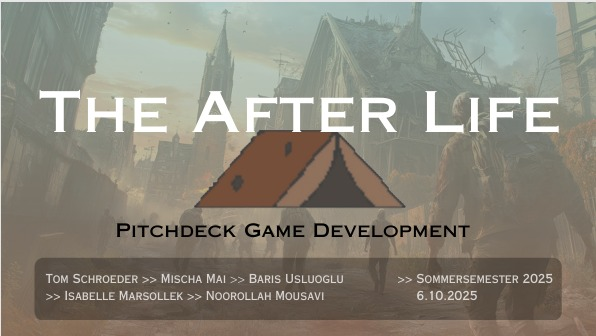
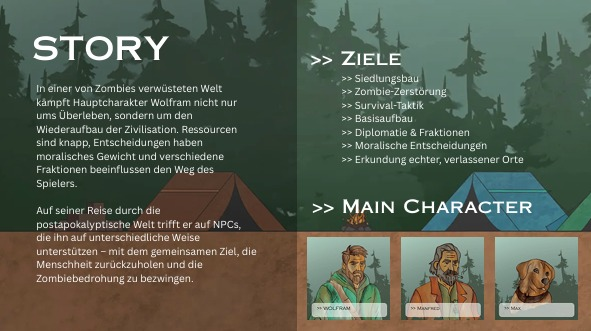

The After Life
Platformer – Survival Adventure – Indie Game
Das ultimative Zombie-Survival-RPG
Baue Siedlungen auf, überlebe Wellen von Zombies und gründe eine neue Zivilisation.
Game Design Dokument
Basierend auf dem offiziellen Game Design Document (GDD) Version 1.0 vom 06.10.2025.
GDD als PDF öffnenBasierend auf dem offiziellen Game Design Document (GDD) Version 1.0 vom 06.10.2025.
Überblick
„The After Life“ ist ein Side-Scroller Survival-Adventure in einer postapokalyptischen Welt voller Zombies. Der Spieler baut Siedlungen auf, kämpft gegen Bedrohungen und versucht, eine neue Zivilisation zu gründen.
Pitchdeck – Folien
Hier siehst du einen Überblick über die wichtigsten Präsentationsfolien aus dem Pitchdeck.
 